M 4 (Simple Skewness)
Lecture - 8
Searching and Sorting - Module 4 (Simple Skewness)
(Refer Slide Time: 00:11)

Hello and welcome to the final module of our second week on ‘Searching and Sorting’ algorithms. This time we will talk about a problem called ‘Simple Skewness,’ which appeared in the Venture Cup 2016 elimination round. You can find this problem on ‘Codeforces.’ This problem has a flavor of a little bit of both searching and sorting, which is why I thought it would be a nice problem to end this week on. It is a simple statement in the sense that it is a short statement with no stories. Let us get to it.
(Refer Slide Time: 00:49)
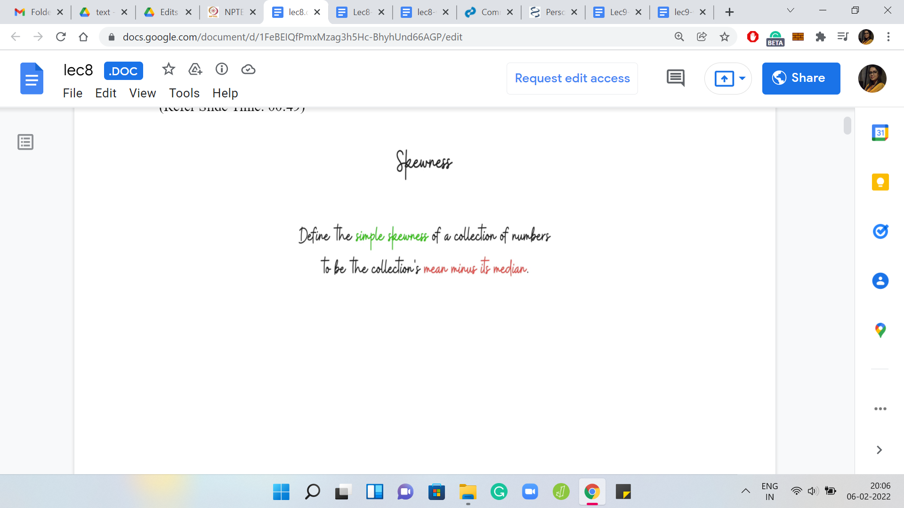
We are given this notion of skewness, to begin with. So, defining the skewness of a collection of numbers as the difference between its mean and median. Notice that this is not the absolute difference, it is the literal difference between the mean and the median. The skewness of a set of numbers could either be positive or negative.
Although I will keep using the term ‘collection’ and ‘set’ interchangeably, this is not a set in the strict sense of the word, which is to say that this collection of numbers can have repetitions. You are also required to find a subcollection, which potentially has repetitions. There is no deduplication involved here. I think the usual term for this is multi-set. But I am not going to really keep that distinction in mind. I might often talk about a set of numbers. Keep in mind that this is a set potentially with duplicates all along.
(Refer Slide Time: 01:47)


Just to make sure that we are on the same page about the basic definitions, let us go over an example. Here we have a collection of numbers, which look pretty neat. By looking at it, you can perhaps already figure out that the mean = 50 and the median = 50. The median is usually defined as the middle element if you look at the sorted order, but the middle is not very well defined if the list has an even size.
If you are dealing with an even-sized collection of numbers, then the median is defined to be the average of the middle two elements. Hopefully, these definitions are clear. Now for this particular list, notice that the skewness is 0. It is not a skewed list at all; the mean and the median coincide. But let us see if we can introduce some skewness by playing around with the numbers a little bit.
(Refer Slide Time: 02:45)
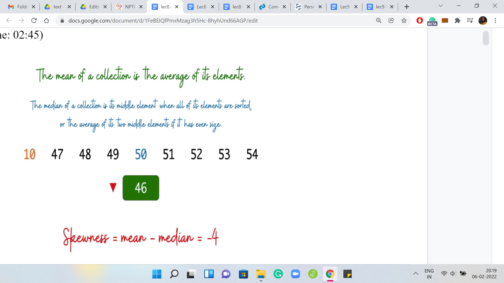 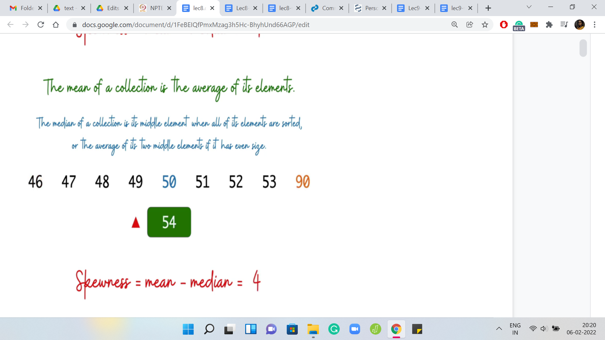
Let us say we take the smallest number and make it even smaller. Then you can see that the impact it has on the mean is that the mean goes down but the median remains the same. In this case, the skewness decreases. On the other hand, if we were to take the largest number and make it even larger, you can see that this increases the mean without touching the median. In this case, the skewness increases.
Hopefully, you have a sense of what skewness means from this example. Feel free to pause here and work out your own examples with small lists of numbers just to, make sure that you are comfortable with the definition at this point. So, what is the task here? We have this definition, what are we supposed to do?
(Refer Slide Time: 03:30)


Given this collection of numbers as input, which once again, I will emphasize do not consist of necessarily distinct integers (you could have duplicates), our task is to find a non-empty subset of these integers potentially with repetitions again, which has the largest possible simple skewness. Observe that unlike some of the previous problems that we have talked about, this question always has a valid answer. You do not have a scenario where you might say that there is no subset that maximizes the simple skewness.
(Refer Slide Time: 04:13)


To see this, notice that at least in principle, you could just make a list of all the subsets that the given set has. Next to each set, you can just calculate its skewness. Then you can pick up the one that has the largest value of skewness. This already is a brute force algorithm to answer the question of what is the subset that has the largest simple skewness.
(Refer Slide Time: 04:41)
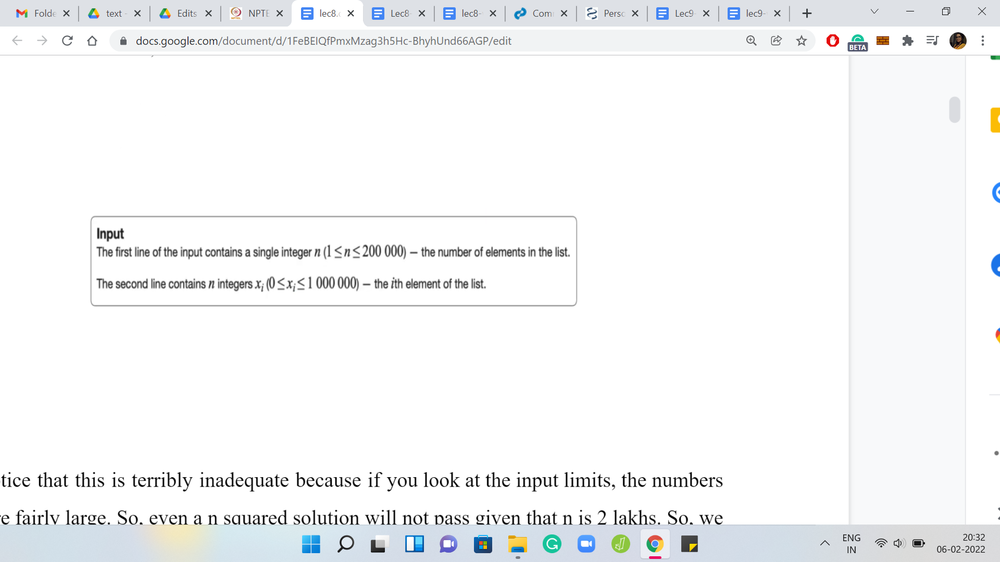
Notice that this is terribly inadequate because if you look at the input limits, the numbers here are fairly large. Even an n2 solution will not pass given that ‘n’ is 2 lakhs. We really have to think about this substantially more and try and get an improved approach, which is somewhat in the ballpark of ‘n log n,’ that is likely to work out. But before we get there, it is useful to think of an n2 approach even as a warm-up. That is what we are going to do. Then we will see if we can replace one of the things that we are doing with some sort of a binary search, which will get us to the n log n algorithm that we eventually want. This is, I think, a useful way of generally attempting such problems.
When it is too much to tackle all at once to get to the best possible solution, come up with one that is probably not the one that you are looking for. See if you can use that as a stepping stone and improve it to the thing that finally works. In this spirit, let us just try to come up with some decent approach that improves on this very naive brute force solution that we discussed so far.
(Refer Slide Time: 05:57)
 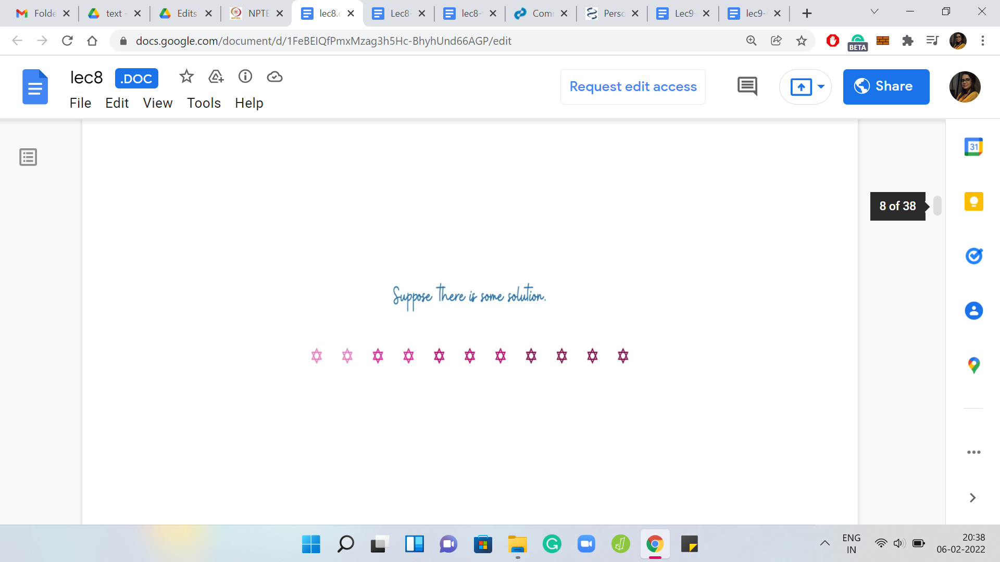
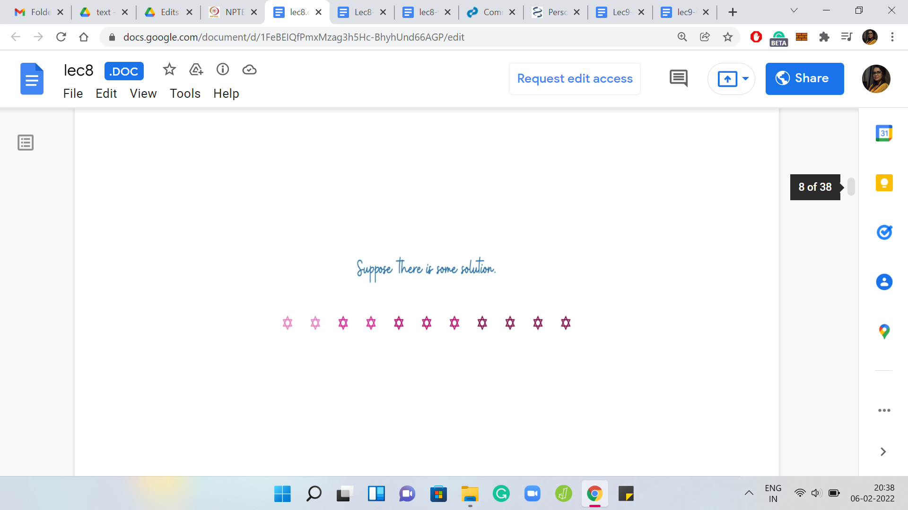
Let us begin by fixing some solution(s). We know for sure that there is at least one solution, maybe there are multiple optimal solutions. But the important thing is that there is at least one. Let us fix an abstract solution in our imagination. We do not know what the solution exactly looks like. This is what our algorithm is looking for. But continuing to just play around with our imagination, let us also reorganize the elements of the solution so that they end up being all sorted. Let us fix our attention on the ‘median element.’
(Refer Slide Time: 06:29)

Again, we do not know what this median element is. Since we do not know the solution, we also do not know its median. But notice that it is something that we can guess. What I mean by this is that we do know that this median element must be one of the numbers that is there in the input array. So, let us just try all of them.
What we are going to do is run one ‘for’ loop, which just goes over all the elements of the array and it asks the following question for any fixed element: If the optimal solution had this particular element as its median, then what would the solution look like? It turns out that this is a much easier question to answer. The median gives you a really good anchor point to build out the solution. But before we discuss how that exactly works out, let us do a little bit of housekeeping first, just to make our lives simpler further down the road.
(Refer Slide Time: 07:30)
 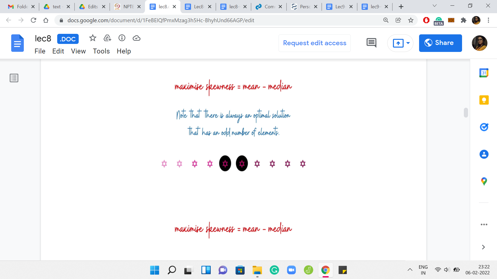
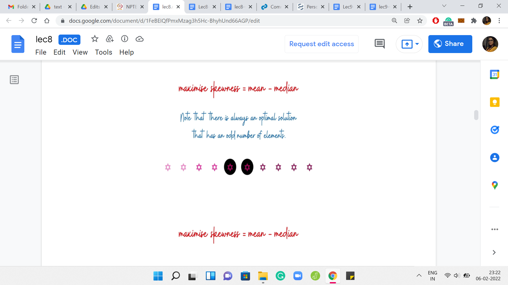
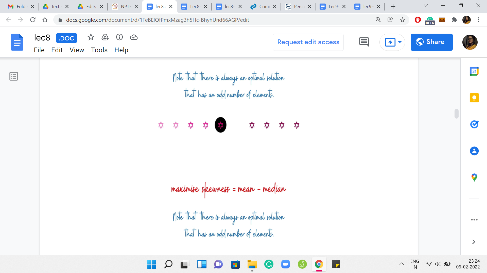 
I am going to assume that there is always an optimal solution that has an odd number of elements. This just makes it easier to talk about everything that we are going to talk about. Why is this true? Let me just trying to give you some intuition for why we can assume this without loss of generality. Suppose somebody gives you an optimal solution that has an even number of elements. Notice that in this solution the skewness must be non-negative.
Why is that? Well, it is an optimal solution. It must have a skewness that is, at least, the skewness of any other set. But on the other hand, also notice that you have the singleton sets available to you. So, a singleton set has 0 skewness because the mean and the median are both equal to just the only element that is there in the set.
Because of this you already have a baseline. You know that there are sets with 0 skewness. The optimal solution will never have negative skewness. Because if nothing else, it could just use a singleton set. So, we know that the optimal solution is non-negative. Therefore, the skewness of this set that your friend has given you, let us say, which has an even number of elements, we know that the skewness of this set must be non-negative. In particular, this means that the mean is at least the median in this set. Now with this assumption, what you can show is the following.
Let us look at the middle two elements and eliminate the larger of these two. The set that you are left with, we claim that this set has a skewness, which is at least as much as the skewness that you had before. In other words, what this means is that the change that you experienced in the mean is, so let us say if you are looking at ‘the old mean - the new mean,’ at most the old median - the new median. That is essentially what it means to say that this skewness did not decrease.
You can show this by just writing down a bunch of relevant inequalities. Remember to start with the assumption that in the original array the mean was at least the median. Then use the fact that you have dropped the larger of the two middle elements to finally conclude that in this new array, the skewness has not gone down. It has either remained the same or it has only increased. Without the assumption that the array has non-negative skewness, this fact may not be true.
You can come up with examples to see that even after you drop the larger of the middle two elements, the skewness can in fact decrease. This little assumption that we are making is important to this claim. I will not be going through the calculations here but it is a good exercise to work through it. Please feel free to take a pause and do that now, or remember to come back to it later, depending on whatever you prefer to do. With this out of the way let us go back to the question: Why is the median a good anchor point?
(Refer Slide Time: 10:43)
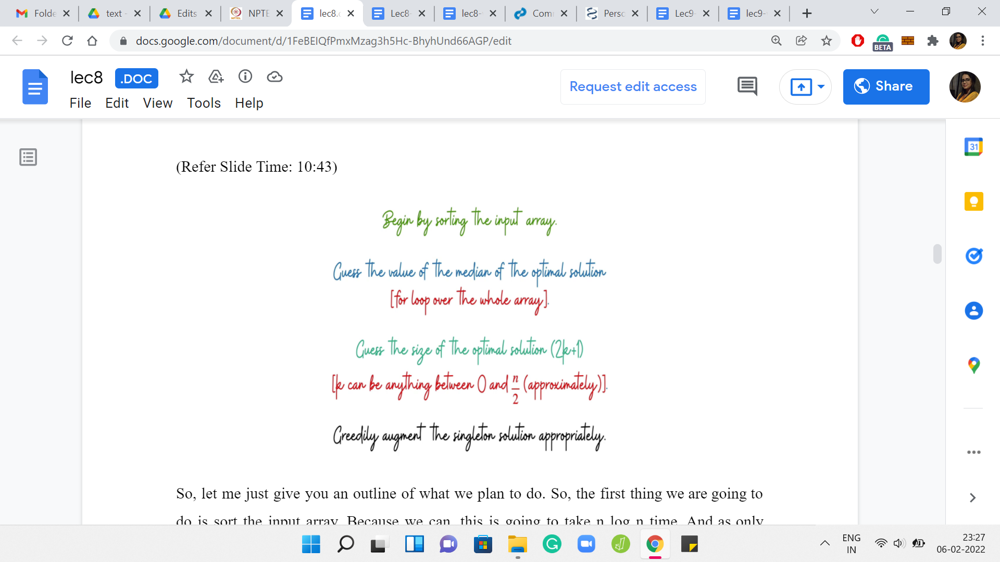
Let me just give you an outline of what we plan to do. The first thing we are going to do is sort the input array. Because we can. This is going to take ‘n log n’ time. I was only half-joking when I said just because we can. There is a very good reason for sorting the array. It will help us systematize the way in which we build out a solution from a median. That is the next thing that we are going to do.
First, we will guess the choice of the median. Just go over this entire array, trying each element out in turn as the choice for the median of a hypothetical optimal solution. Having fixed the choice of the median, let us also fix the size of the output array. We are going to guess how many elements there are in the optimal solution.
This guess is again going to cost us another linear expense. I mean the size of the optimal solution can be anything between one and ‘n.’ We are going to disregard the even numbers in this range. So, it is going to be, roughly, ‘n’ by two numbers that we are going to explore. But still, this is something that is going to show up as a nested ‘for’ loop.
You can probably already see why this algorithm is going to be order n2 in the worst case. We still will have more work to do even after we have fleshed out this particular algorithm. If you want to think ahead a bit, it is this step that we will replace with some sort of a binary search subroutine. But let us not get ahead of ourselves.
Let us try to completely understand what is going on here. At this point, we have guessed the median. We have also guessed what is the number of elements in the optimal solution. We also know that the optimal solution contains this one element. We need to figure out the remaining 2k elements that go in there. We will have to, again, just look at the array to figure out what is the best choice for these remaining 2k elements. This is the part that we need to figure out a little more explicitly.
(Refer Slide Time: 12:58)


Let me switch to showing you, again, an abstract example here. Let us say this is our sorted input array. There is this one highlighted element. Let us say that is our guess for the median. Now I really want you to pause here and think about what is the best choice of an extra 2k elements on top of this one for the optimal solution. Let us say I told you that the optimal solution contains this particular highlighted element.
What can you say about the remaining elements in the optimal solution? Of course, given that you also know that the optimal solution has 2k+1 elements altogether. That is also given to you. That is where we are when we are inside any particular snapshot of this nested ‘for’ loop. You have fixed the choice of the median. You have fixed how many elements you want to pick up.
The only thing remaining to do is to figure out which elements to pick up to have your best shot at maximizing the skewness. Think about this for a moment and come back when you are ready. Notice that since the median is fixed, maximizing the skewness essentially amounts to maximizing the mean. Because you know that you have to pick 2k elements. You also know that you have to maintain the fact that the highlighted element is the median.
That is the structure that we have sort of guessed for ourselves at this point. We know in particular that k of the elements that we choose must come from before the median element and the remaining k elements must come after the median element. Also, at this point maximizing the mean really amounts to maximizing the sum of the elements that you choose.
You want to pick as far as possible the largest elements that are available to you. So, it makes a lot of sense to pick the last k elements and also the k elements that show up just behind the median. It is not the first k elements because that would be suboptimal. Those would be the smallest k elements. You can do much better by just pushing your luck as much as possible.
You are constrained to be behind the median. You can just pick the largest 2k elements, for example, because then the highlighted element would no longer be the median. That is not going to work. In most cases, there will be choices of a highlighted element for which you do end up picking the last 2k elements.
But in general, what do you have to do is exactly what we just described. You choose the last k elements, and then you choose the k elements that show up just before the median. That is the greedy strategy for augmenting the solution starting from the median.
(Refer Slide Time: 15:54)

Hopefully, you can see why the median was a useful anchor for the initial guess. Let us come to the bit that we were hinting at earlier. We see that this is kind of the bottleneck step in the running time of our algorithm, which is taking a hit because of this. We will now want to think about how we can substitute this guess of the solution size with some sort of a binary search. In particular, we want to not try all possible choices of k. But we want to do some sort of binary search for the right value of k.
Unlike in the previous problem, where one of the big challenges was to even find the range of the search space, we do not have that issue here. We know that ‘k’ ranges between, say, 0 and n/2. We can go and poke this range right in the middle. No problem! But now what is not clear is what question should we ask.
How do we figure out how to cut out the search space to the left or to the right or in some other way? To try and understand what the behavior of ‘k’ is like with respect to skewness, let us just try to go through the slow algorithm, again in an abstract setting, just to get a feel for what is going on with the skewness as we add more and more elements to the array. See if we can pick up some hints from this behavior.
(Refer Slide Time: 17:24)
 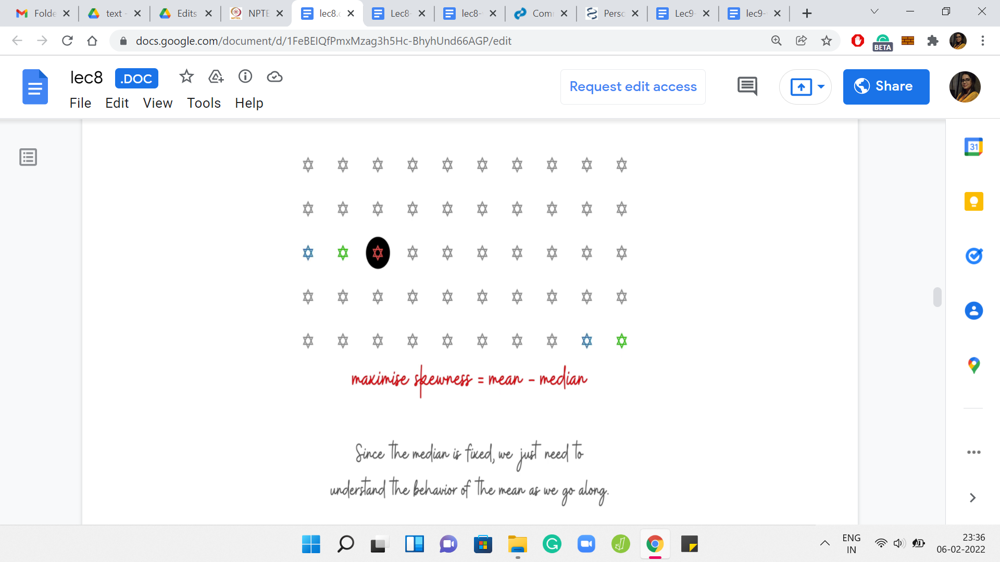
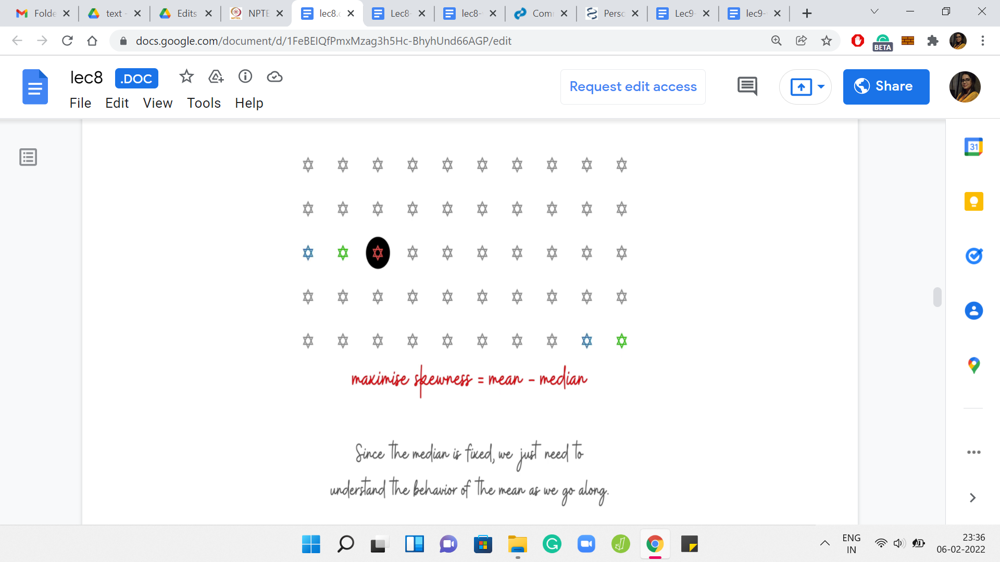


Here is our abstract array. At this point, we have ventured out from the median. We have added just one element. Let us say that this choice of an array of three elements is better than the previous choice, which was just the singleton element with the guessed median element alone. That one had 0 skewness.
Let us say that by adding these two elements, we have either 0 skewness again or hopefully, we have even an improved skewness from before. We continue and try to add one more element. Let us say the skewness continues to improve. We add one more element and let us say the skewness continues to improve. One thing that is worth noting about these elements is that the elements that we are adding themselves are getting smaller as we go along.
This is because of the fact that we are working with a sorted array. The first element that we added was the largest possible pair of elements that we could have added. Then in the second step, we add elements that are at most the ones that we added in the previous steps, and so on and so forth. That is something that is useful to keep in mind.
What we want to understand is: How does the skewness evolve as we add more and more elements? Notice that this is the same as asking, how does the mean evolve as we add more and more elements? Because the median is fixed the way in which we are building this array out. The median always stays the same. It is enough to just focus on the behavior of the mean.
How does the mean change as we add more and more elements? Let us consider a particular snapshot and say that the current array that you have built out has a sum of S. Let us say it has ‘d’ elements where d is going to be ‘2k+1’ for some choice of k. So, the current mean is S/d. Let us say we add the elements ‘a’ and ‘b.’ So, the new mean is going to be (S+a+b)/(d+2) because our array has also grown by two elements.
What we want to understand here is the relationship between the current mean and the new mean. When does it happen that the new mean is less than the current mean? When does it happen that it is the same or it increases and things like that? Notice that if you could show something like the mean always increases or stays the same, then that is wonderful. Because then you do not have to search for, any ‘k’ at all. You can just pick everything and, you would be in business. You can pick as much as you can so that you have an equal number of elements on both sides.
But if it was true that the mean always, you know, increases or stays the same. Then there would be no reason to stop except for when, you know, you have run out of elements on one of the sides of the array. So, you could just keep picking. And in particular, you would not need to run an internal ‘for’ loop at all. You would just fixate, you know, on what is the largest k that you can accommodate. And that would have been your answer.
But that seems too good to be true. That is indeed the case, which you can verify by just working through a few small examples. The mean does not have a consistently non-decreasing or non-increasing behavior. Once again, this is something that can be verified by just playing around with small examples. On the other hand, what is it that we can hope to show? Whenever you have a binary search, in a broad context, usually some sort of bitonic behavior is very useful to have.
If the value kind of keeps increasing for some time and potentially hits a peak and then decreases or remains non-increasing, then that is a useful kind of behavior. Because then we can still find our way around using a binary search spirited technique, which is to say that we keep probing the range and we try and figure out the slope of the change. If it is headed downwards, then we move to the left. If it is headed upwards, then we move to the right.
What we are looking for is of course the peak. We want the place where the mean is as large as it can possibly be. This is something that one would typically anticipate once you are practiced in binary search, and you try to show something like this. Do not be surprised by the fact that we are expecting this behavior. It is just something that shows up quite often. Now that you know it as well, you will know to try and look for this as you encounter new problems as well. Let us try to see if we do experience bitonic behavior here by taking a closer look at what is going on.
(Refer Slide Time: 22:10)


Let us try to figure this out by comparing the value of the current mean with the average of the two numbers that we are trying to add. The reason we are looking at these two quantities specifically is because we want to anticipate applying the mediant inequality. This is something that you may have seen in school. It is an inequality that relates two fractions in terms of the sum of their numerators and denominators.
Applying this inequality, this is what we get. But notice that the expression that you have in the middle is precisely the new median. The median that you obtained by adding these two elements to your set. We see that if the average of the two values that you are bringing in exceeds the current mean, then the new mean will also be larger than the previous mean.
Otherwise, you have the opposite behavior by just applying this inequality in the other direction. If the mean of the currently added elements ‘a’ and ‘b,’ does not exceed the mean of the old set, then the mean of the new set will not be bigger than the mean of the old set. What we want to say is that, okay, we know this. We also want to claim that the mean will increase up to a point potentially, but once it has reached a stage where it is peaked or it is going down, then it will never strictly increase once again.
That is the kind of bitonic behavior that we were referring to. The intuition for this is simply that the elements that we are adding just keep getting smaller and smaller. If not strictly smaller, remember, we have arrays with repetitions, at least the elements we are adding are no larger than we had before. This, again, is strangely similar to the overall spirit of the argument that we were trying to make with the ship if you remember from the previous problem.
There we were saying that if in the first step, you have kind of lost sight of the safe zone, then you are never coming back. Here also if there is some stage at which the mean fails to increase for the first time, then from there it is all literally downhill. It is never going to come back up.
(Refer Slide Time: 24:26)
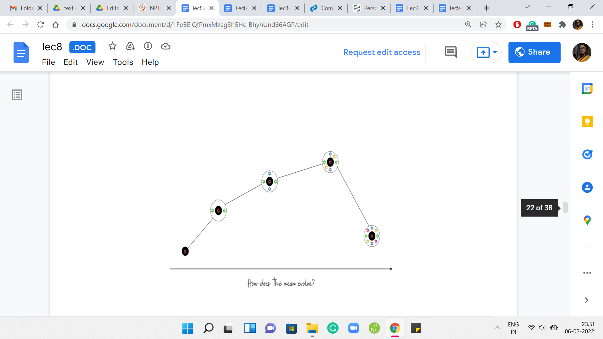 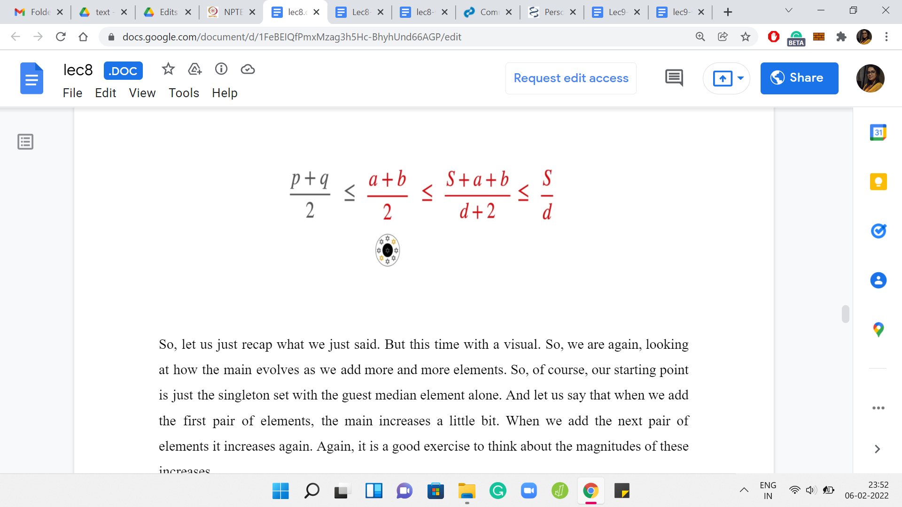
Let us recap what we just said with a visual. We are, again, looking at how the mean evolves as we add more and more elements. Our starting point is just the singleton set with the guest median element alone. Let us say that when we add the first pair of elements, the mean increases a little bit. When we add the next pair of elements, it increases again. Again, it is a good exercise to think about the magnitudes of these increases.
Is it possible that when you add the second pair of elements the mean increases more sharply compared to when you just added the first pair? Keep in mind that these pairs of elements that you are adding right now are diminishing or the same when compared to the pairs of elements that were added just in the previous step. This is a good exercise to go through. But let us continue our journey here in the meantime. Let us say we add another pair of elements, and the mean goes up again.
But at some point, perhaps, you will encounter a first incident where you added a pair of elements and the mean either stayed the same, or it did not increase, which is to say that it strictly went down. The claim that we wanted to make was that once this happens, then there is no hope for the mean to increase ever again. That is why this first point where the behavior flips, that is the global maxima for the mean.
That is the thing that you are looking for. That is exactly the bitonic behavior that we were talking about. Let us see why we expect this to be true. Let us say that we kept adding elements for some time and we experience a non-increase of the mean for the first time when we add the elements ‘a’ and ‘b.’ This was the last step that was depicted in the visual in the previous slide. Let us think of this as some sort of a critical event.
This is the first time that the mean did not increase. Let us say that in this step, right after this, we are adding the elements ‘p’ and ‘q.’ Again, by the structure of the array, we do know that p+q is at most a+b. I am just going to conveniently write that in terms of averages because that is what will be useful. What we know because of the fact that a, b we are witnessing the critical event is the fact that the average of ‘a’ and ‘b’ is at most the previous mean. So, let us say S was the mean at the step when ‘a’ and ‘b’ were about to be added. We know that the average of a, b is at most the mean in their stage. That is why when you added them, the mean decreased. From here, let us apply the mediant inequality to see that the average of ‘a’ and ‘b’ is also the average of the mean of the array that was obtained after adding in the elements a, b. Remember, S is the sum of the array that a, b were about to get into. It was the previous array in some sense.
After adding a, b we have a new array whose sum is, ‘S+a+b.’ Because of the mediant inequality, we know that the average of a, b is also at most the new mean that you obtained. It is not only at most the previous mean, it is also at most the new mean. Now the important thing is that we can now combine these two inequalities, the fact that p+q is at most a+b, and the fact that the mean of a, b is at most the mean of the current array, to see that p+q is at most the mean of the current array.
Now this array, whose sum is S+a+b is the array that p+q are trying to enter. The average of p and q is at most the mean of this array. That is what we have from this chain of inequalities. You can repeat this idea for the next step and the step after that. If you want to be formal about it, you could use the language of induction to make this precise.
The base case is pretty much what we just discussed. You can formalize what goes on from the ith step to the i+1th step to argue that once you are on a downward journey, it just keeps spiral wing downward, or at least it stays put. But there is no hope of the mean increasing ever again.
(Refer Slide Time: 28:57)
 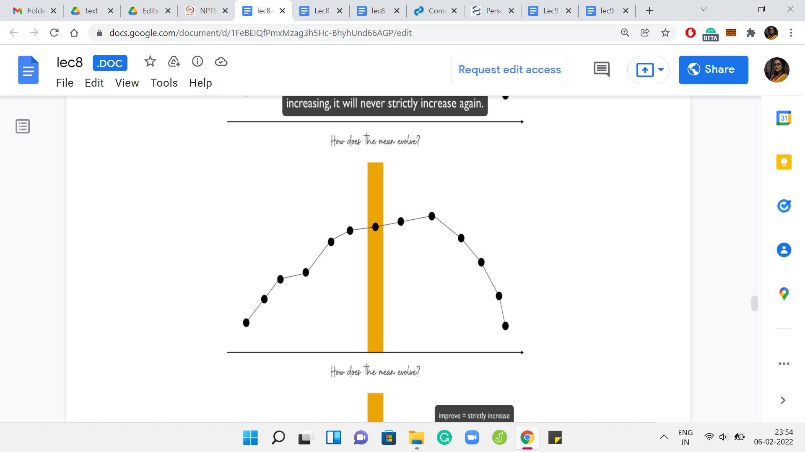
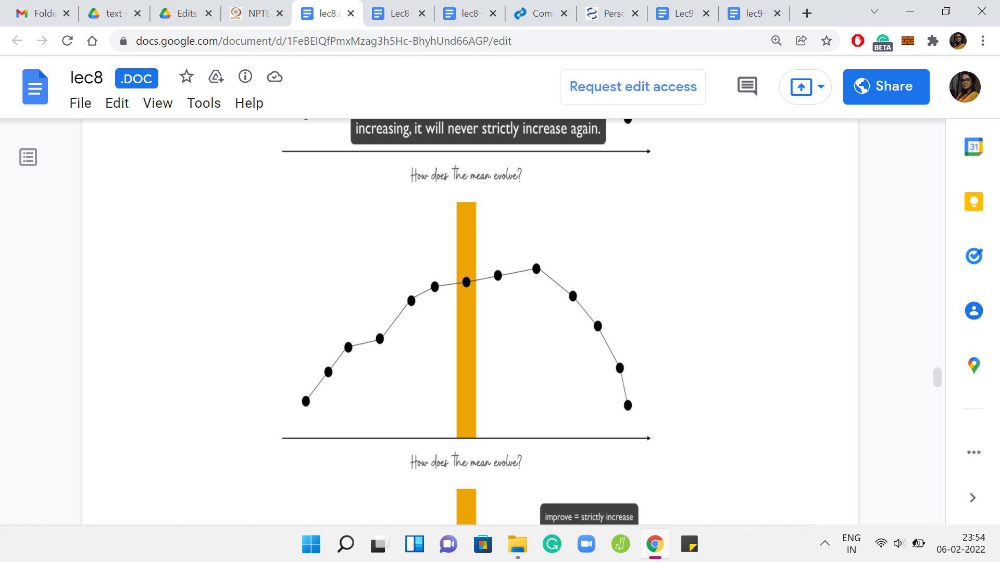

Overall, your evolution of the mean looks something like this. There is a place where it attains a maximum. It is possibly going to peak for some time. But the point is that once it has reached that maximum, it never increases after that. Let us try and see how the binary search would work. Let us say that we probe this range of values for ‘k’ somewhere in the middle. We say that we want to add ‘n’ by 4 elements to the array.
Remember, ‘k’ ranges from 0 to n/2. Let us begin by trying to add ‘n’ by 4 elements to our median element. Once we have made this initial choice of guess for ‘k,’ what we want to do is try and identify which side of this slope are we on? Are we on the uphill trajectory? Or are we on the downhill trajectory? Well, this is easy to identify by just comparing the current choice of k with the next choice of k.
What we will do is we will say, okay, instead of trying to pick k elements, suppose we were to try and pick the ‘k+1’ element. Let us try to pick one more. Of course, that has to be feasible first of all. If you are on an edge case, you have to just stop because you cannot go any further. But assuming you are not on an edge case, you just compare what is going on. You want to know if the mean improves, by enhancing the size of your set by one.
If the mean does improve, then that is a sign that you are on this uphill slope. If the mean does not improve, then it is a sign that you are on the other side. That will allow you to figure out which side of the search you should pursue further. That is kind of the overall description of our algorithm. Basically, you want to begin by sorting the array and guessing the choice of the median, and from here, you want to do a binary search for the size of the array that you want to build.
Once the binary search has informed you about the size of the optimal set, given that a specific element is a median, you want to keep track of the best answer that you obtained for this choice of the median. In the end, you just return the best answer that you found overall.
The running time of this algorithm will be order ‘n log n’ because you have the sorting step at the beginning that is order ‘n log n.’ Then you have the outer loop, which is going to run at most ‘n’ times for the guess of the median. Then what do you do inside is essentially this binary search.
The overall expense of these nested loops is going to be ‘n log n.’ Hopefully, this overall approach sort of made sense. This is a new style of binary searching in the sense that you are not probing and immediately getting a yes-no answer. You are trying to detect some sort of slope behavior for a particular value that evolves in a bitonic fashion.
Hopefully, this sort of overall form of a situation in which you can apply binary search is useful for you to keep in mind. I do know that this is widely applicable. I hope that you are able to leverage this as well. Now that the main ideas of the algorithm are somewhat in place, let us turn to the implementation.
As always, this is a good time to pause, if you want to try this yourself. One thing to watch out for in this particular implementation is that there are lots of little edge cases to worry about. Be very careful with your indices because there will be a lot of those floating around. In particular, one edge case that is important to be careful about is the range of the values of k.
Remember that you are working with some guess have a median that is going to be someplace in the array. Just make sure that your range of values for ‘k’ is a valid range, in the sense that it should never be more than the number of remaining elements that are available on either side of the median. That is the sort of thing that you have to just be a little bit watchful about.
The other little tip for efficiency is to compute an array of prefix sums for the input array. This will help you do your mean calculations quickly. Remember that whenever you are probing in the binary search, you are asking questions like does the mean increase after we include these two elements, or does it not increase?
For this, you do need to compute the mean several times. This just becomes faster if you have access to an array of prefix sums because it is just a matter of getting to the sum of the relevant sub-array. Remember that you are always looking at contiguous chunks in the sorted array. That is a really helpful thing to have for fast computation of means.
I have not tried if not using a prefix array will cause a timeout or not, but it definitely does not hurt and it is just good practice to have. With all that said, I think this is your last chance to pause the video. My final spoiler alert! We will be coding in C++ for this one, and I may be skipping some variable initializations in this presentation here. You can find the full code on the official GitHub repository.
If you do have Python or Java variants that you would like to contribute, then please do create a pull request on that repository with the appropriate documentation. Remember to attribute yourself. Now let us actually get started here.
(Refer Slide Time: 35:09)

The first thing is reading the input in. I have used long data types here. I cannot be sure that that is absolutely necessary. But I think I just wanted to be on the safe side. The only important thing that is happening on the code that you can see is the fact that we are sorting the array. Do not forget to do this in the beginning. It is crucial to the logic of the rest of the program that we are working with a sorted array, to begin with. Other than that, all the input business is fairly standard. There is nothing special going on here.
(Refer Slide Time: 35:45)

This is the place where we just compute the partial sums vector. This is just maintaining cumulative sums as we go along. The way we calculate the partial sums for the first ‘i’ elements is that we just refer to the partial sums that we have already calculated for the first time ‘i-1’ elements, and then we add the value of the current element to it.
That is all that is happening here. These cumulative sums, as we were saying earlier, will come in handy when we want to do mean calculations while we are in the middle of the binary search. We will have a separate helper function called ‘find mean’ or something like that. I will come to that at the very end because I just want to focus on the main logic of the code first. Let us get to that.
(Refer Slide Time: 36:36)

This is the outer ‘for’ loop where we guess the value of the median. Now one important thing to keep in mind is that ‘guess’ is simply guessing the index of the median element. The variable guess does not store the median element itself.
You will need to, at some point, actually refer to the median element that you are guessing when you come to the stage where you have to print the output. It is definitely important to remember that you need to print ‘b’ of guess if you want to print the median element, for instance, and not guess. That will be messed up.
In general, I think this is just one category of small and annoying bugs where you mix up the index and the element at that index. This is just a heads up to be careful about that. Now, let us first calculate the range in which we want to do our binary search for this particular choice of guess.
As we were saying earlier, you have to be careful about ensuring that you have enough of a supply of elements on the left and right for a particular ‘k’.
For instance, if you have an array of length 100. Let us say there are 100 elements, and your median is the fifth element in the array. Then notice that you cannot add more than four elements, rather eight total, but you can only add four from the left. You can, of course, add four from the right when there are lots of elements available.
But then there are just going to be four steps in the range for ‘k’ that you are going to try out. Just make sure that you get your indices sorted out here. Because we are doing 0 based indexing, if the current median is at the guess index, there are ‘guess many’ elements available before it. For instance, I was just saying that suppose your median is the fifth element, then well, that is indexed by 4 because of 0 based indexing.
Therefore, we know that we have four elements behind the median. You can similarly calculate the number of elements that are there after the median.
Again, for things like this, just to avoid like silly bugs, at some point, with practice, these kinds of calculations will become quite natural, but it is just helpful to do a really small and silly example on pen and paper just to make sure that you sanity check your indices, and you have them right.
I think this is tried and tested code. I am just going to believe that there are no mistakes here. Hopefully, this is the right range for ‘k.’ We are obviously going to take the min of the two options because it is the smaller sub-array, the smaller side, that is going to be the bottleneck. That is our range.
Here are some simple initializations for the binary search business. The lower limit for the range is 0, as we have discussed before, and the upper limit is what we have just calculated. That is L and R for you. The midpoint is ‘L+R/2.’ Now we have set the stage for the actual binary search.
(Refer Slide Time: 39:50)

This is the heart of the entire algorithm more or less. I mean, there are, of course, a few more details after this as well. But this is really the main thing. As long as we still have some range left where we are not sure, so that is given to you by this ‘while’ condition, R-L is greater than 0, so our left and right endpoints have not conclusively coincided at someplace, we need to continue searching. That is the standard ‘while’ condition for binary searching. Hopefully, that is clear and not confusing.
Now, what is the current guess of ‘k’ that we are working with? So, remember, by k, I mean, my guess for how many more elements should I have on top of the median in my optimal array. The current guess for k is mid. We are just starting, so, we have come in after the initialization. The current value of mid = ‘L+R/2,’ but in general, also, as we go on, it is going to be a loop invariant that mid is our current point of probing. We are asking ourselves: Is mid a good value of ‘k’ to work with?
Where does mid lie on that sort of bitonic picture? Are we on the strictly increasing slope part of it? Or have we come to the part where it is going downhill or it is experiencing a plateau? We know that if things are going downhill, or if it is a plateau, then we need to shift our choice of mid towards the left because we have, in some sense, come too far.
On the other hand, if we are at the place where things are looking up, we are in the increasing slope part of the picture, then we need to increase our value of mid, and we need to discard the left half of the search space. How do we check which side we are on? What we said was that we will try to compare the current mean with the mean that we would get by trying to add two more elements to the array.
That is what we are going to do here. We are going to tentatively increase ‘k’ to ‘k+1,’ or we are going to probe mid+1 as a possible choice for ‘k.’ We are going to ask ourselves: How did the mean change? Did it increase? Or did it not increase? Now when I am saying increase, I mean a strict increase.
This is something just to be careful about, like when you write down your condition for how the search space is going to get pruned. Remember to just make sure that you know when to use a strict inequality and when to use less than or equal to or greater than or equal to, and so on. Let us just do this probe. We are saying our tentative value of k is ‘mid+1.’
Let us see what are the next elements that we want to pick. Notice that these will be available to us because we are working with an appropriate range of ‘k.’ These will be valid elements to talk about.
Notice that ‘a’ is the value coming in from the top. It is basically the kth largest element in the array, and ‘b’ is the value that is coming from the left half of the array. So, we are going ‘k’ steps behind the current guess, to incorporate these new elements. This is ‘a’ and ‘b,’ the new elements that are trying to join the array.
Now, let us recall the criteria that we had evolved to figure out whether we are on the uphill side of the graph that depicted how the mean is changing, or whether we are on the downhill or the plateau side of things. What we had said is that if the mean of the incoming elements dominates the current mean, meaning that it is strictly more than the current mean, then the mean will increase, otherwise, it does not increase.
That is exactly the binary search criteria that we have put in here. We have taken the current mean, which by the way, we have computed by function call to this helper function. As I said, we will come back to that later because I do not want to be distracted with those logistics right now. Just assume that we can compute the current mean efficiently.
What we want to do is compare the value of a+b/2 with the current mean. So, if a+b/2 is at most the current mean, then your mean is not going to increase. It is still possible that the value of ‘k,’ which was the current mid, that is the best possible value of ‘k.’ Because this could very well be the inflection point. Maybe a, b is the first time that the mean does not increase.
The current value of ‘mid’ may well be the answer that you are looking for. Or it is something smaller. Maybe you are still in the middle of the boring zone of the graph, and you need to roll back further. You do this by essentially bringing R up to mid because it is either mid or less (the answer that you are looking for). I think we are saying that R is ‘max of mid, L.’ Normally you know that ‘max of mid, L’ should always be mid. I mean mid would always be ahead of L.
I think I have done that just to maintain symmetry with what I have written in the ‘else’ condition. Let me just come to that in a minute. But you could pretty much say R = mid and that should be fine out here. What is going on in the ‘else’ block? Here we are saying that look, the current mean actually increased after we added the elements ‘a’ and ‘b.’
This is looking good. We are going uphill, we are strictly getting better. We know that all values of k up to an including mid are useless for us.
We know that ‘k’ is going to be at least mid+1 or more because we have already sensed a straight improvement. We are going to be greedy.
We are going to reduce our range to ‘mid+1, R’ to say that continue your search on that side of the space. In this case, doing this min of mid+1, R is just necessary to take care of some edge cases, I think, because of the way mid works. I think it is by truncation when L+R is odd, so it is possible that when you add 1, then you actually go overboard, you go beyond R. So this is just a bit of a sanity check condition that is been thrown in here.
I think I am pretty sure that I had arrived at this by looking at some small values and experimenting with what was going on. Because without putting in the sanity checks, I think there were definitely some edge cases that were not working out. Again, feel free to not, like, copy this over verbatim but just work with your own sort of version and see what you discover in terms of the right limits that you want to impose.
But hopefully, it is clear why we are able to disregard the entire search space from L all the way up to mid inclusive and we want to go to mid+1. That is the binary search that we wanted to do. I think you might be wondering if this offset of +1 is really important.
I do not think I have tried it without that, but I think it should work out the same. Again, if you try variations of this, and they work out just as well, then, please feel free to share those. I would definitely look forward to it. But in the meantime, I think we can move on from here.
(Refer Slide Time: 48:01)
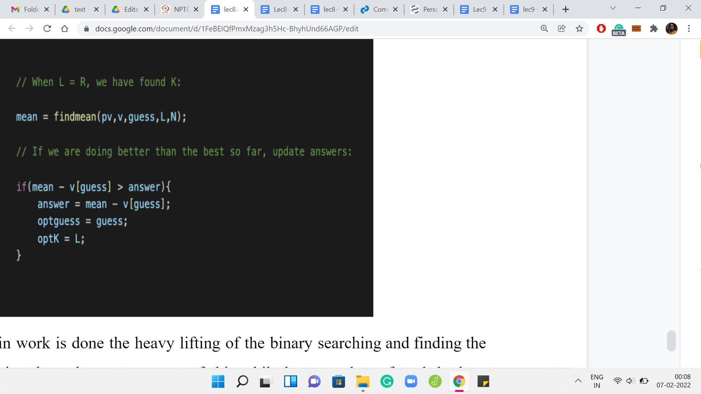
Now that the main work is done, the heavy lifting of the binary searching and finding the right value of ‘k.’ Notice that when we are out of this ‘while’ loop, we have found the best possible value of ‘k.’ Now what we want to do is find the mean with respect to this choice of ‘k.’ What this ‘find mean’ helper function will do is it will take the value of the current median, the location of the current median, and the value of how many extra elements you want to incorporate.
Then it will return the mean of that sub-array for you. Calculate the mean and then see if this improves on the best mean that you have discovered so far. You have an answer variable. Again, this is a variable whose initialization I have skipped. You can look up the full code in the repository just to fill in the small details. But essentially, the answer is designed to store the best answer that we have encountered so far. You can always initialize the answer to 0 because as we have discussed, there is always a solution whose skewness is 0.
That is the initial bar. Every time we can improve on the current best answer that we have discovered, we would want to update some of these variables. If the current skewness is better than whatever skewness we have stored in the answer variable, then we need to make some updates. Notice that here to compute the skewness, you should do ‘mean - v of guess,’ not ‘mean - guess.’
So, ‘guess’ is not the median. It is just the index of the median element. If you want to subtract the value of the median so that is ‘v of guess.’ If you do hit a jackpot, and things got better from all the previous guessing that you have done. I do not know if guessing is a word, but all the previous guesses that you have taken, then let us just update the scene here. Of course, answer gets updated with the new value of skewness. We are also keeping track of the best guess that we had so far and the length of the array.
(Refer Slide Time: 50:18)

Remember, these are the two things that we need to actually compute the array that witnesses this particular skewness. The reason we are tracking this is that as a part of the output, we are actually required to print an array, which has the best skewness. Again, this is a little bit of like boring logistics. Nothing remarkable going on here. But you just have to make sure that you carefully print all the elements of the subset.
Fortunately, you have on hand the value of the best choice of median and the best choice of size of the subset. It is just a matter of navigating the array properly and printing out all of those elements. If you go further back in this video and remember, there was a place where we showed you how to pick these k elements. Those are the top k elements and the k elements that come right before the choice of the median. That is the combination that you are looking at. That is exactly what this code here is doing. I will not go through it line by line. But I hope that it is kind of self-evident.
Here is the ‘find mean’ helper function that is the only thing that remains to be discussed. As I said, the ‘find mean’ helper function will take the choice of the location of the current median that you are working with, the value of ‘k,’ and will also have access to the partial sums vector. Here all we are doing is, essentially, if there is only one element in the whole array, which is signified by the fact that ‘k’ is 0. You do not want to add anything, then you just return that element; there is nothing to be done.
Otherwise, in the more interesting case, you want to compute the sum of the whole array. What we are doing is, essentially, these two expressions here are computing the sums of these two chunks that we have identified. The first chunk is essentially the top ‘k’ elements. You can see that the second term in the expression computes that. So ‘pv of N’ is the partial sum of the whole array, which is essentially the sum of the whole array.
From there you are subtracting the partial sums up to the N-kth element. With the appropriate indexing, you do have to pay attention to the indices here. But it turns out that it will just subtract off the partial sum up to the point where you only have ‘k’ elements left after that. All of that excess baggage goes away. What you are left with is the sum of the last ‘k’ elements. Very similarly, the first expression will calculate the sum of the ‘k’ elements that are just behind the median, and up to the median.
It will also include the median element in its calculation. The sum of these two terms gives you the overall sum of the array, whose mean you are trying to find. You return this divided by ‘2k+1’ because 2k+1 is the size of the array that you are working with. Hopefully, this helper function is clear as well. That is essentially the entire code. Just try to keep things clean when you are doing your own version of this because, as I said, the indices can sometimes definitely be a bit confusing.
Other than that, I think conceptually, once you get the hang of it, what is going on is really nice. Hopefully, also not that hard. I mean, I am not sure if you are somebody who is sort of scared of doing binary searching. I hope that after this, you feel more confident about it, and you feel ready to tackle problems that are based on binary search.
With that, we come to the end of all of the problems that we wanted to do this week. I hope you enjoyed it as much as we enjoyed putting this together. Next week, we are going to be talking about greedy algorithms. That is going to be a whole lot of fun as well and a completely new theme. In the meantime, if you had any questions about these lectures, then you can post them in the comments on YouTube.
Or you can post your questions in the Discord community or add the official mailing list for the course on Google Groups. Any of these methods should work. One of us will get back to you hopefully quickly. In the meantime, have fun coding, and we will see you next week. Bye for now!